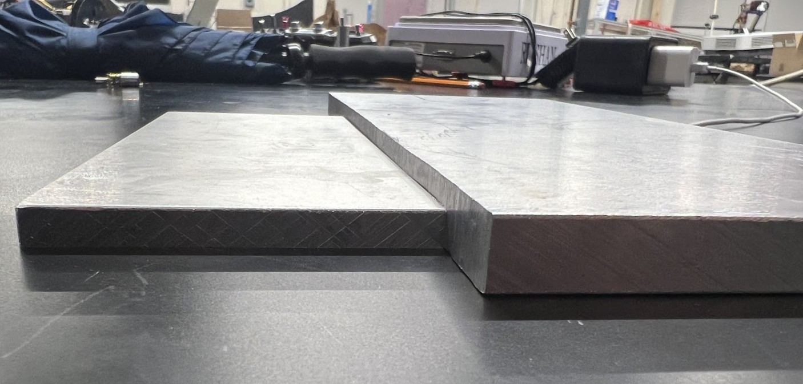

Spinny Boi
The Spinny Boi 3000+ is a combat robot designed to compete in the NHRL 3lb weight class, and was created primarily by Albert Lin and Peter Molzer.
However, I occassionally help out with it and have attended all of its matches so far (two).
This project started in fall of 2024, and is inspired by Event Horizon, another ring spinner made by a few friends on the Northeastern Combat Robotics team
which has been an ongoing project for a couple of years now.
The spinner design allows its weapon to serve as armor, and honestly just looks pretty cool.
Even though Spinny Boi is in the 3lb weight class, its omni-shuffler drive as an alternative mode of movement allows for an extra pound and a half of weight (based on NHRL rules).
Instead of wheels, the robot uses three shufflers containing several strips of small "teeth" that push the robot forward.
The omni-drive system allows the robot to translate in three directions along with the ability to rotate freely.
While I am not the main contributor to this project, I have helped by sanding down some parts and squaring stock on a manual mill in preparation for waterjetting.
During meets, I'm able to assist with assembling and disassembling the robot for repairs. I am also the designated driver when traveling to meets.

The piece I squared is on the left.
MIT December 2024
Spinny Boi competed at an MIT collegiate battle bots tournament in December 2024 and, ironically, was up against its inspiration, Event Horizon. Watch its first-ever battle hereAs this is an ongoing project, I will keep this page updated on progress and the outcome of our matches.
NHRL April 2025 Competition
Spinny Boi did quite well during its NHRL (real) debut. Although it lost its first match, it was able to make a return in the losers bracket, and eventually make it into the official competition bracket. Unfortunately I spent most of the tournament sleeping in my car, as I only got 2 hours of sleep the night prior and drove 3 hours to Connecticut afterwards. I was, however, able to see what went down in the first match. Spinny Boi was up against a beater bar robot called Blunder, which was at just the right level to peel open parts of Spinny Boi. One of the main plans for the next iteration is to improve load bearing capabilities in the vertical direction.Spinny Boi was fortunately able to be repaired in time for the next match, which was up against Meringue, a horizontal spinner. Without needing to bear large upward forces, Spinny Boi fared better and won this match, bringing it into the official bracket.